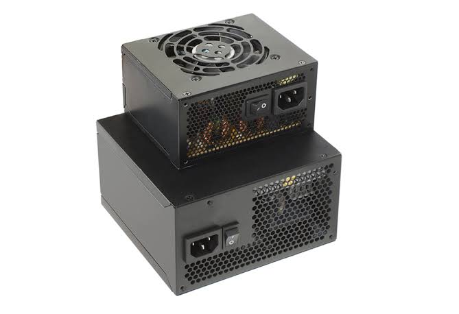

Kvalitetno napajanje važnije je od velikog broja vata

Napajanje je komponenta koja utjeÄe na stabilnost cijelog raÄunala, posebno kod jaÄih konfiguracija.
Osim snage, važno je gledati kvalitetu modela, certifikat uÄinkovitosti i zaÅ¡tite koje napajanje ima.
Bolje je uzeti provjereno napajanje srednje snage nego jeftin model koji na papiru ima puno vata.